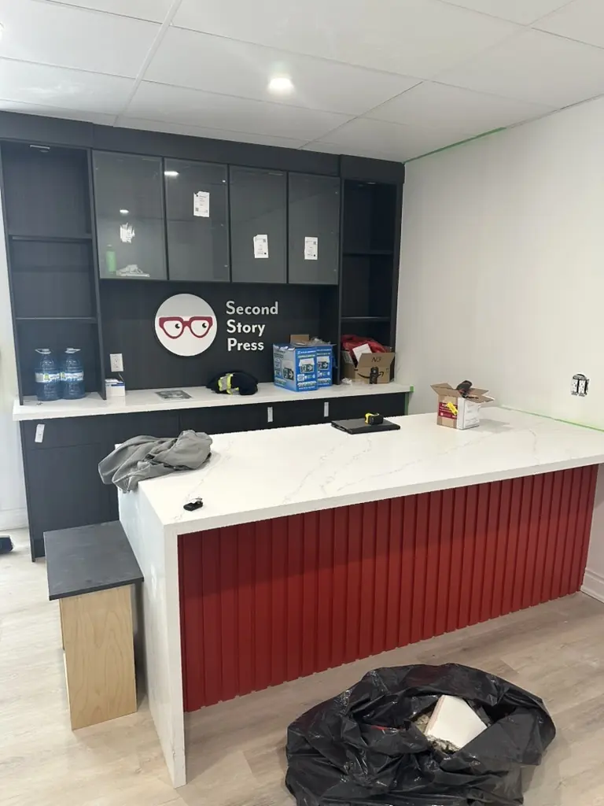
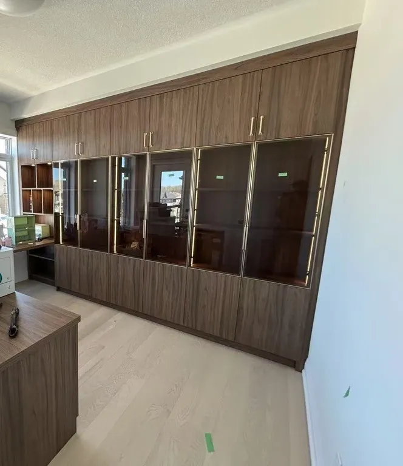
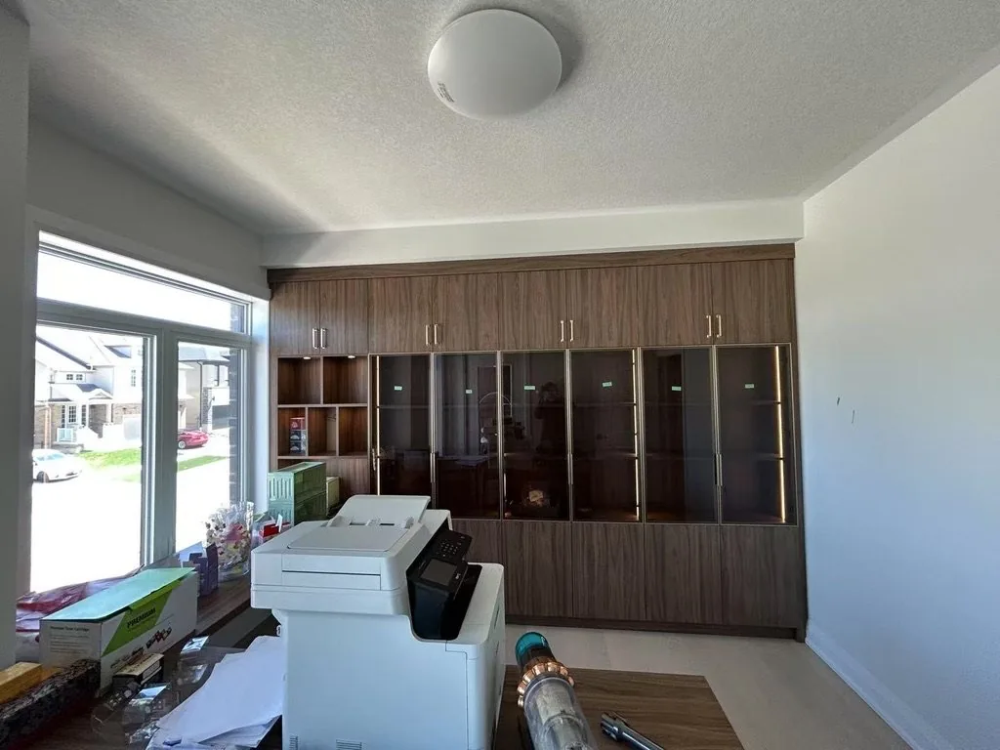
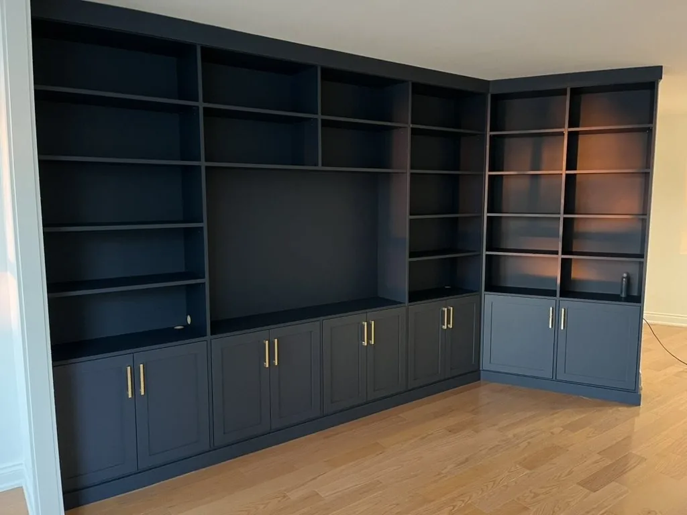
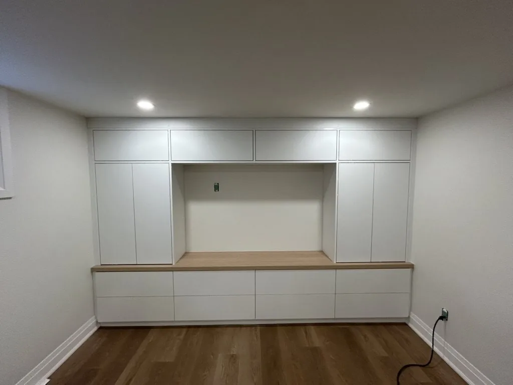
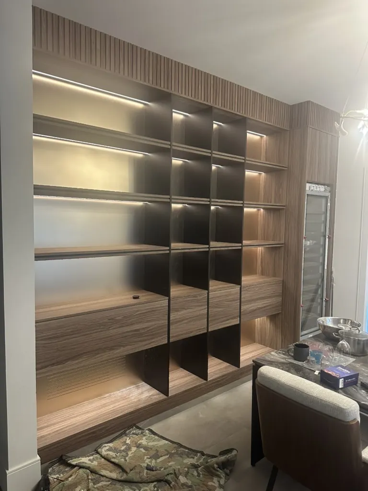

ARMOIRES DE BUREAU
Bureaux à domicile, étagères intégrées et menuiserie de réception commerciale, fabriqués et installés à Concord, Vaughan et dans tout le Grand Toronto.
CE QUI EST INCLUS
Un bureau doit résister à un usage quotidien tout en restant élégant pour vos clients ou votre famille. Nous fabriquons des bureaux à domicile avec pupitres et armoires vitrées intégrés, ainsi que de la menuiserie de réception et de poste de travail commercial, tous conçus selon l'usage réel de l'espace.

PROJETS RÉCENTS





QUESTIONS
Oui. Nous fabriquons des armoires de bureau à domicile et des pupitres intégrés pour les clients résidentiels, ainsi que des comptoirs de réception et de la menuiserie de poste de travail pour les espaces de bureau commerciaux.
Oui. Nous intégrons régulièrement un éclairage DEL pour les armoires vitrées et les étagères, ainsi que des passages de câbles et des prises pour les pupitres et postes de travail.
La plupart des bureaux à domicile prennent de trois à six semaines entre les mesures finales et l'installation. Les échéanciers pour la menuiserie de bureau commercial et de réception dépendent de l'ampleur du projet, et nous confirmerons un calendrier une fois le design établi.